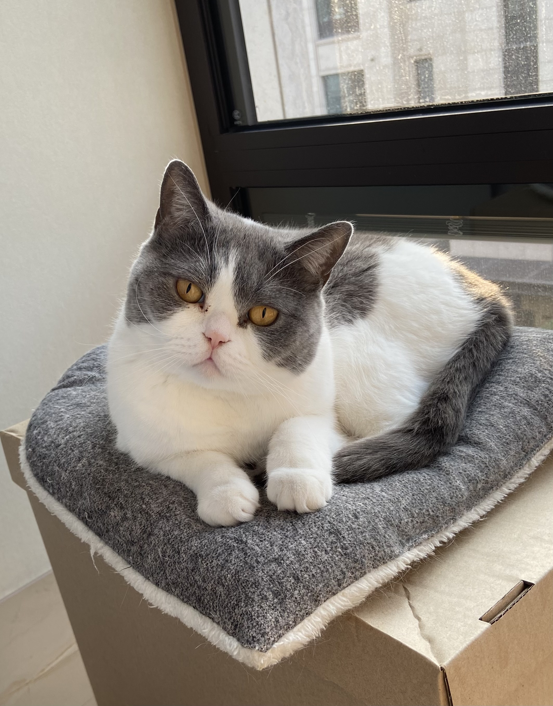
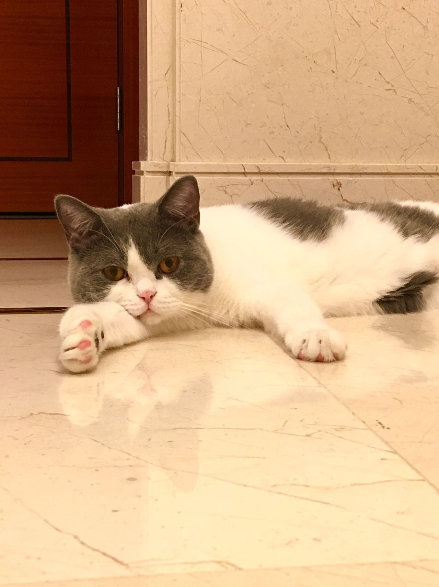
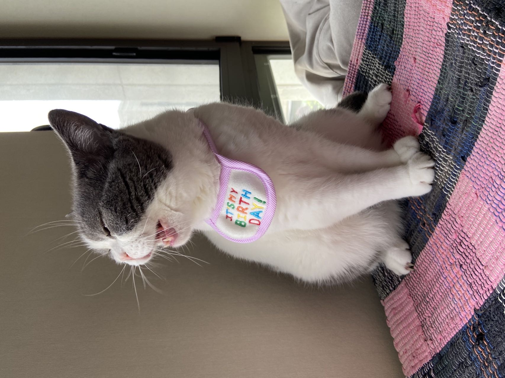
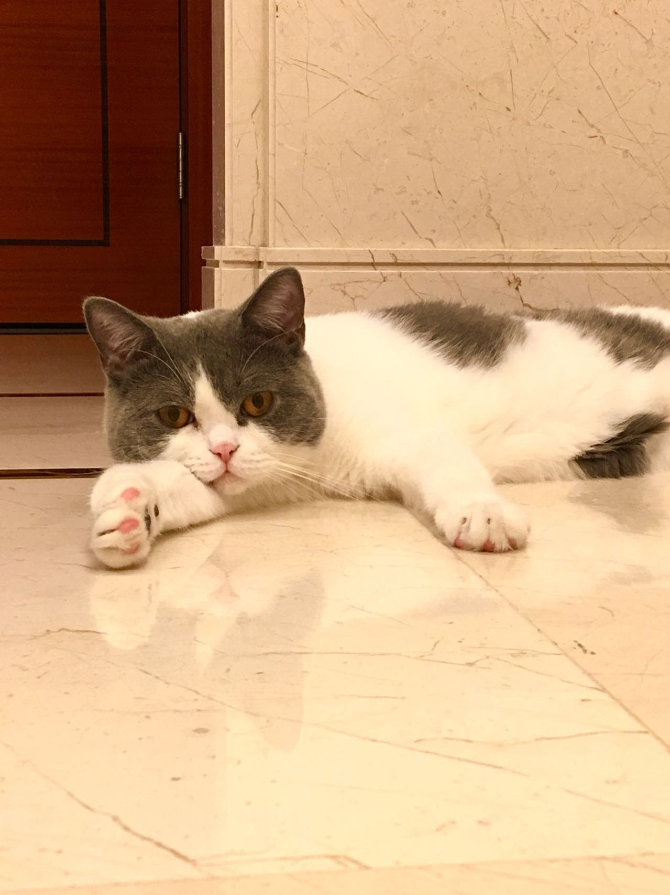
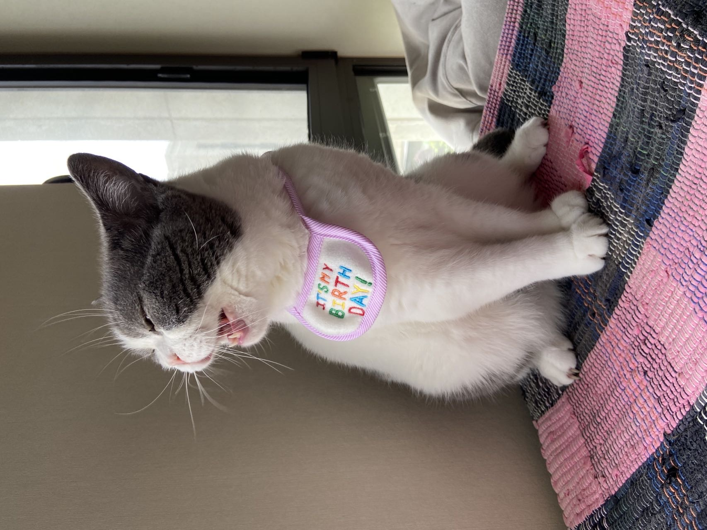

Pets
Bacon Q Dog

Bacon Q. Dog is a 9yr old labradoodle. He prefers to spend his days lounging among the three different beds/couches that his family has gifted him. He enjoys a walk or two around the neighborhood, as long as he can pretend that he doesn't see any of the other animals to avoid the embarrassment of not wanting to admit he has no wolf-like skills in chasing them.
At night just as the rest of the family is ready to relax, Bacon suddenly wants to release all of his energy. He will place his toys on a mini couch and frantically drag the couch around, giving his toys "a ride." There is also a lot of rolling. Lots and lots of rolling.
Photo Gallery


See Bacon in Real Time
Likes
- Belly rubs
- Playing tug-of-war
- Sneaking onto the couch
Kiki the Cat
Meet Kiki, a lovely six-year-old British Shorthair cat who rules the roost in our home in Shanghai, China. Originally brought in this family as a birthday present for his two human sisters, Kiki has become the heart and soul of our household. His sisters love and adore him immensely.
Kiki is not your average feline; he's a lively and playful boy. You'll frequently catch glimpses of him sprinting through the house or scaling the highest points, whether it's the closet or refrigerator. Despite his naughty antics, every member of the family holds a special place in their hearts for him. Kiki has woven himself into the fabric of our lives, bringing joy, laughter, and a whole lot of adventure.
Photo Gallery
 



Likes
- Sleeping
- Lying next to the window and enjoying sunshine
- Birds